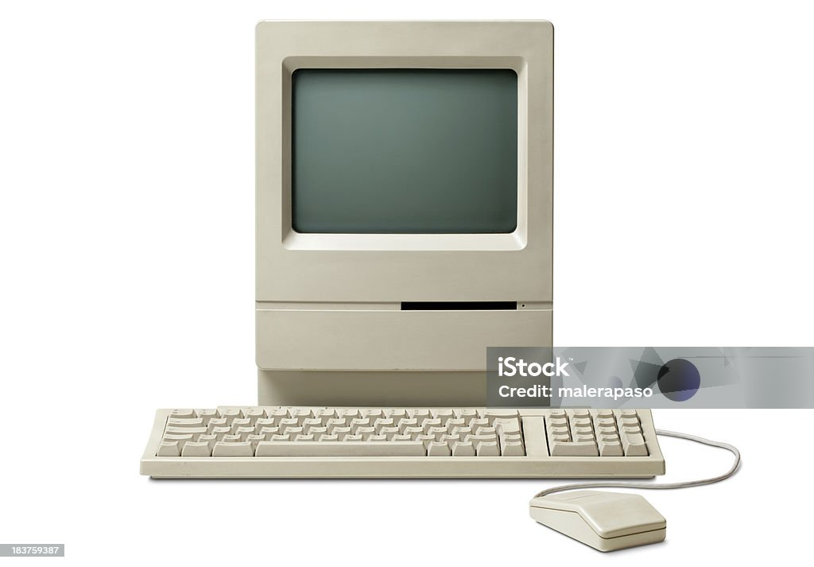

La vie de Bruno commence à Termes, une ville située quelque part loin de la grande ville. C’est un enfant éduqué par ses parents Patrik et Isabelle qui sont très riches et distingués.
Du coup Bruno habitué de la bourgeoisie se lasse de ses traditions et de cette richesse astronomique tellement qu’il peut racheter le Taliban qui même après l’achat reste assez de sous pour vivre une vie d’épanouissement.
Du coup il décide de s’intéresser à un domaine très particulier, bien séparer des livres et des bijoux, la technologie du moins plus précisément l’architecture des ordinateurs.
Il s’intéresse beaucoup à ce domaine plus qu’il espérait, c’est grande découverte est devenue une grande passion qui s’avère très prometteuse pour son future.
Pour avancer dans sa nouvelle passion, Bruno décida de commander à 7ans son 1er ordinateur fixe au père Noël, en une image la bonté de l’homme rouge de Noël ci dessous, pour tout vous avouer, Bruno a été déçu et content, un mélange de deux émotions bien différentes.

Premier Ordinateur de l'heureux Bruno
Chapitre 2: Découverte du réel
Après plusieurs années plus précisément 10ans et 28 mois 14 jours 17 minutes et 47 secondes Bruno entra dans une fac pour se spécialisée dans l’informatique et commença son aventure dans les études supérieurs.
Une fois rentrée dans le bain, Bruno se sens à l’aise avec les matières qu’il étudie, Voici un tableau avec les notes de Bruno associées aux matières qu’il étudie :
Etudiants
Anglais
Série
Struct & Algo
POO
Linux & Shell
Dev Web
Génie Logiciel
Moyenne Générale
Bruno
11/20
13/20
20/20
20/20
44/20
20/20
24/20
21,71/20
Les résultats de Bruno sont très étonnants, est-ce de l’acharnement au niveau du travail ?
Et bien, j’ai envie de vous répondre oui et non, c’est à la fois du travail régulier mais surtout du talent, du vrai skill, du pur, du vrai, du bon, venu tout droit des enseignement de l’espace des mathématiques et de l’informatique, connaissance des professeurs stocké dans la mémoire interne de son cerveau.
Ainsi ce fut un étudiant très brillant et studieux, avec quand même de la modestie et du respect d’autrui, un élève aimant un environnement de travail calme et posé. Le bruit n’est que source d’énervement et de haine, les mêmes symptômes que le jeux League of Legende apporte à ses joueurs.
Voici le logo du fameux jeu vidéo pour les plus curieux d’entre vous :
Logo de League of Legends
Chapitre 3: Compétences Douteuses
La vie de Bruno fut très mouvementé et elle le sera d’avantage.
Bien de renouveau et d’aventure lui sera offert par dame nature, plein de bonnes choses lui seront données et surtout la santé mais également un poste dans une grande entreprise de téléphonique, je ne vais pas dire le nom de l’entreprise pour éviter les amalgames et les critiques vis à vis de moi et de l’entreprise.
Mais ce que je peux préciser c’est la non-joie de notre cher Bruno, puisqu’il a fait un bac + 78 à la fin de ses études et ∑a^n , n appartient au réel (avec a une suite numérique) de master en poche.
Après plusieurs discutions avec sa femme Mirlène et sa mère Michel (oui elle a changé de nom), l’acceptation de ce job par les membres de sa famille fut validés. Il doit quand même nourrir sa pomme et celle de sa femme .
Chapitre 4: Plan Final
Le but de notre protagoniste est de se venger de la société puisqu' on lui a proposé un travail très douteux vis à vis de ses capacités.
homme choqué omg 'O'
Cette image c’est vous en ce moment, en effet cela vous choque tout autant que moi.Pour se venger, son plan et de hacker les clients de l’entreprise, oui vous l’avez bien lu, HACKER.
Pour mener à bien son projet, il a demandé personnellement au directeur de l’entreprise d’être muté au poste de répondeur téléphonique. Et c’est avec facilité que Bruno a réussi à passer la 1ère étape de son plan.
hacker(man?)
Maintenant qu’il est au contact des gens, il demande à chaque client leur mot de passe pour acceder à l’ordinateur personnel, et par miracle les utilisateurs acceptent sa demande.
Bruno peut prendre contrôle de l’ordinateur des clients mais par empathie il décide de ne rien faire car Bruno est bon. Soyez comme Bruno !!!!!
Chapitre 5: Batman
La nouvelle personne de Bruno et bon et bienveillant, or comme dans tout bon thriller de nos jours, il faut du rebondissement, alors je vais vous en servir.
Comme tous les jours, Bruno rentre chez lui pour se reposer (normal) et pour passer du bon temps avec sa femme (j’ai oublié le nom je crois que c’est Jiselle), et décide de passer à l’étape supérieure dans sa vie de couple, oui fondé une vrai famille.
Plusieurs mois plus tard le bébé de Bruno naît âgé de 1an et demi directement, pourquoi vous me le demandez? Car sa femme a fait des expériences scientifiques manipulant le temps, l’espace et l’argent.
Non c’est faux on est juste 1 et demi après la naissance du bébé, non c’est faux le bébé est déjà ado, il vie sa meilleur vie au lycée national du Kazakstan, non c’est faux sa femme est encore enceinte, non c’est faux le bébé est né et il a 9 mois et il va parfaitement bien à l’abri chez Bruno. (c’est vrai cette fois)
…….Non c’est faux hahaha !!!! C’est batman qui a kidnappé le bébé prénommé «Citadin».
Prochainement dans le Tome 2, Citadin va-t-il être sauvé par son père ?